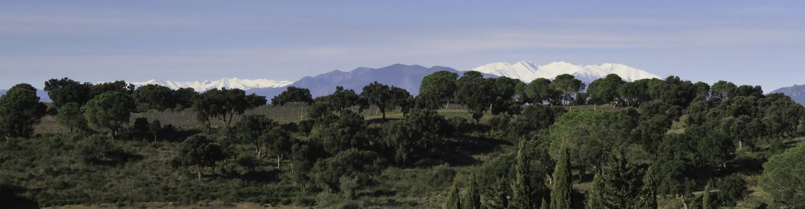

Ruta · Roses
Llarga ruta en sentit antihorari per carreteres comarcals i locals amb ferm en bon estat. Rodarem per la plana de l’Alt Empordà entre conreus i aiguamolls; ens acostarem fins a la serra de…